Cartography by Hand
Beneath the Surface
I was invited by Matt Dooley and Nick Martinelli to participate in a session at the 2018 NACIS meeting called "Cartography and Fine Art: Exploring Intention and Purpose." Participants were asked to focus on the making process—the technique and the intention behind the work. Dooley and Martinelli asked us to go a little deeper than making for the sake of making, or sheer catharsis. Certainly there's nothing inherently wrong with art for art's sake, but the hope was that the papers presented, together, could spur new ideas and discussion. I opted to discuss recent work using intaglio printmaking as a medium for expressive cartographic design. For my abstract, I wrote:
Drawing maps by hand led me to rediscover intaglio, or etching, as a means to further explore the expressive dimensions of cartography. In this talk I'll discuss my initial foray into hand-printed cartography–a simple map of Mt. Rainier–as well as more recent projects and experiments. Etching a copper plate, working its surface with hand tools, inking it, and running it through a press spurs an exchange between the cartographer and the print medium that I have only begun to explore.
Below you can view the video of my talk, and below the video, I've included the slides. It was an absolute delight to share that session with Dooley, Martinelli, Lauren Rosenthal McManus, and Steven Holloway.
Mount Rainier
Click to cycle through images.
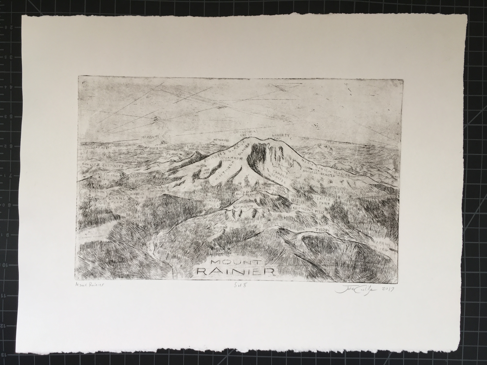
2017. Copper plate etching. 15" by 11".
Ever since I started drawing maps by hand a few years ago, I've wanted to incorporate my background in fine art printmaking into the process—to bridge my current work in cartography with printmaking, allowing the print medium to enter into the map-making conversation. A major impediment in years past has been time, but more importantly, having access to a printmaking facility. In conversations with my good friend and printmaker, Brian Lane, we devised a plan for me to work at his shop in Seattle, Print Zero Studios, over a condensed four-day period in July, 2017. I set my sights on exhibiting the finished product in the Map Gallery at the NACIS Annual Meeting in Montréal, and used that to spur me in to action.
Fittingly for a project to be executed in Seattle, I chose an aerial view of Mount Rainier, the brooding stratovolcano that rises over 14,000 feet above the surrounding countryside just sixty miles southeast of the University of Washington campus, where I learned printmaking under the guidance of Shirley Scheier, Curt Labitzke, and Larry Sommers. The drawing technique I exhibit in my hand-drawn maps has retained characteristics informed by traditional printmaking techniques, particularly the linework and hatchuring common in zinc and copper plate etching, and this led me to choose this technique over others, like woodblock and silkscreen. Compared to my past hand-drawn maps, which can be as large as the table surface I have access to, delving into copper plate etching after a long hiatus from the process would require the development of a much smaller composition. I felt a portrait of a mountain would fit these constraints nicely. Earlier in 2017 fellow NPS cartographers gifted me with an impressive collection of Heinrich Berann posters, and his masterful depiction of Denali served as a major inspiration.
Below I've included some documentation of the process. I went from concept to finished print in less than three months, an extraordinary turnaround when compared to the two and half years of off and on effort that went into the California map. I consider this print more of an experiment, dipping my toe in the realm of making maps with traditional printing techniques. If I get the opportunity to return to this medium in the future, I'll want to refine my lettering (writing small letters backwards with a twisted scribe on a copper plate coated in hard ground is as difficult as it sounds), etching and stop-out techiques, ink preparation and consistency, and perhaps even add aquatint for tonal effects.
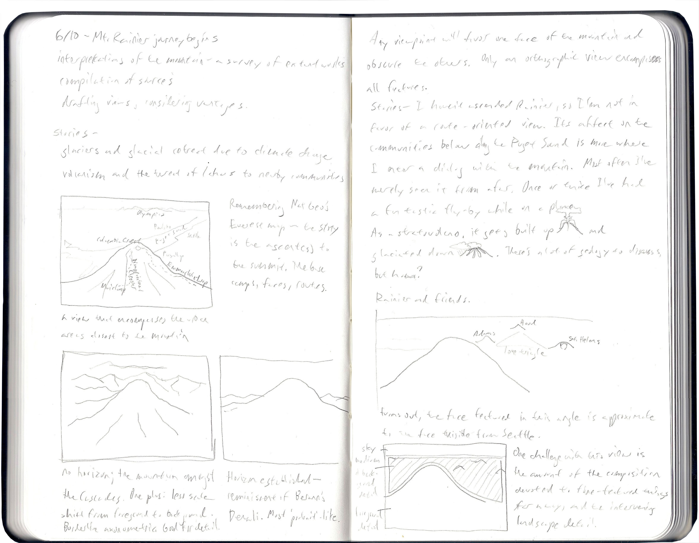I started sketching ideas in my notebook for framing the mountain in a composition. I chose a vantage that encompasses some of Rainier’s interesting features, and contextualizes the mountains with some of its peers in the Cascade Range: Mt. Adams, Mt. Hood, and Mt. St. Helens, which suffered a massive eruption in 1980.
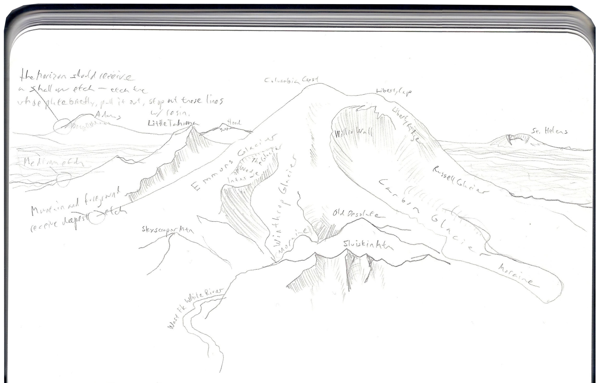 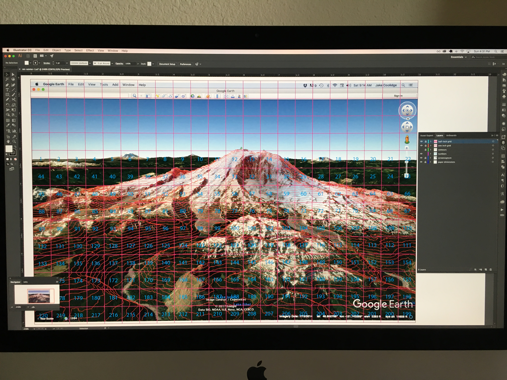I extracted contour lines from USGS 1:24k topographic quads and added this data to Google Earth. With contour data draped over imagery, I overlaid a grid in Illustrator. Using the grid (the method-of-squares technique), I experimented with a hatchure-based relief depiction demonstrated in Imhof’s Cartographic Relief Presentation. This preparatory work happened in Colorado during May and June, prior to heading out Seattle.
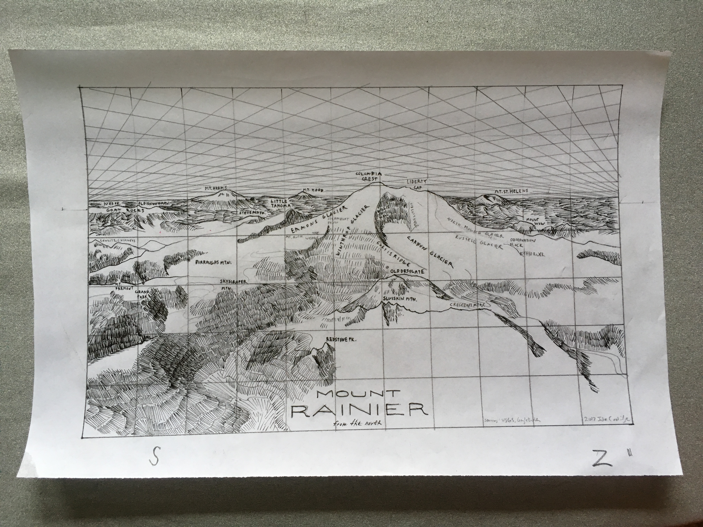 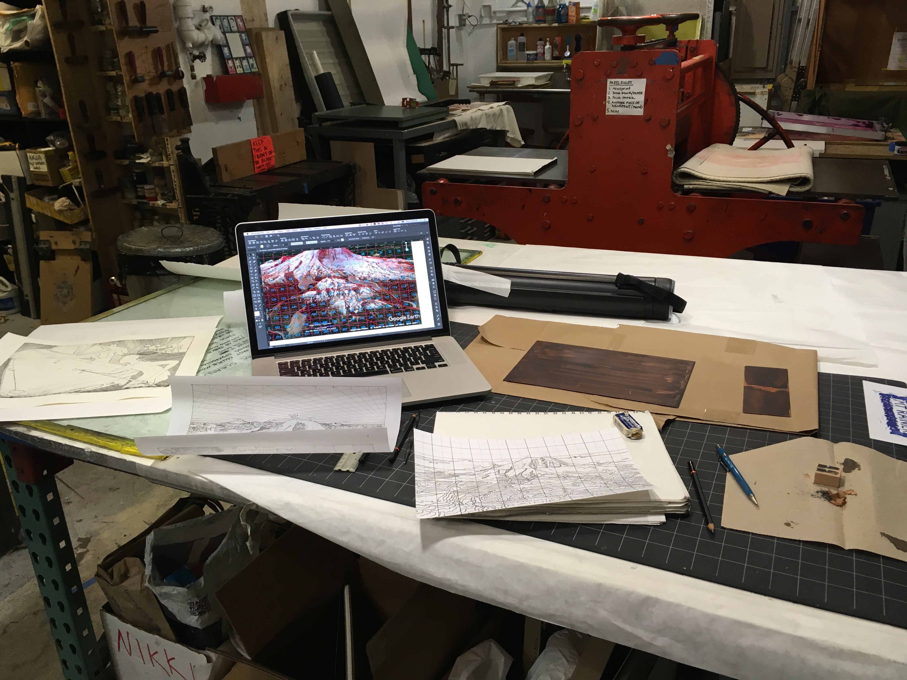The image above depicts an early scene at Print Zero Studios, Seattle. I’ve applied a hard ground to the copper plate and am preparing to transfer a pencil sketch outline of the map to the plate.
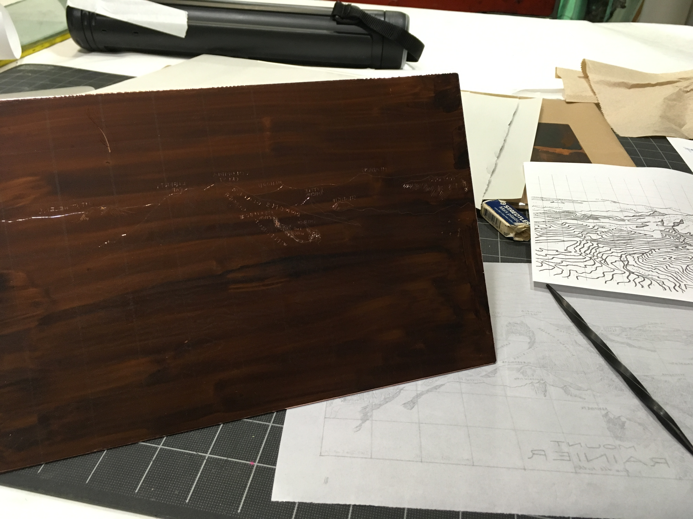With graphite from the sketch transferred to the plate surface, I use a twisted scribe to scratch the drawing into the hard ground with fine lines. This exposes the plate to etching by acid. Later, the etched lines can hold ink below the surface of the plate.

Click images above to view series; photographs by Nikki Barber. Having etched the plate, removed the hard ground, and applied ink, I run the first proof through the press. The first proof was pretty light, so I reapplied hard ground and did some more drawing on the plate. I also modified the ink consistency for better results in future proofs—my thanks to Nikki Barber for her key assistance in helping me get the ink to be more workable.
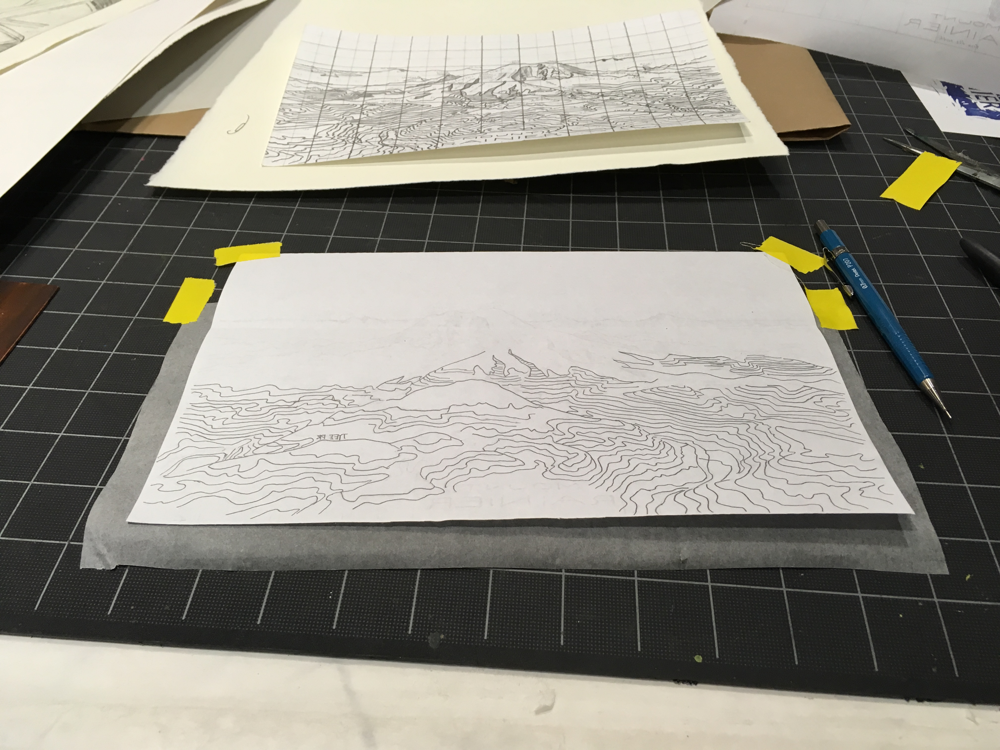Second time transferring the pencil sketch to the plate, using Saral transfer paper.
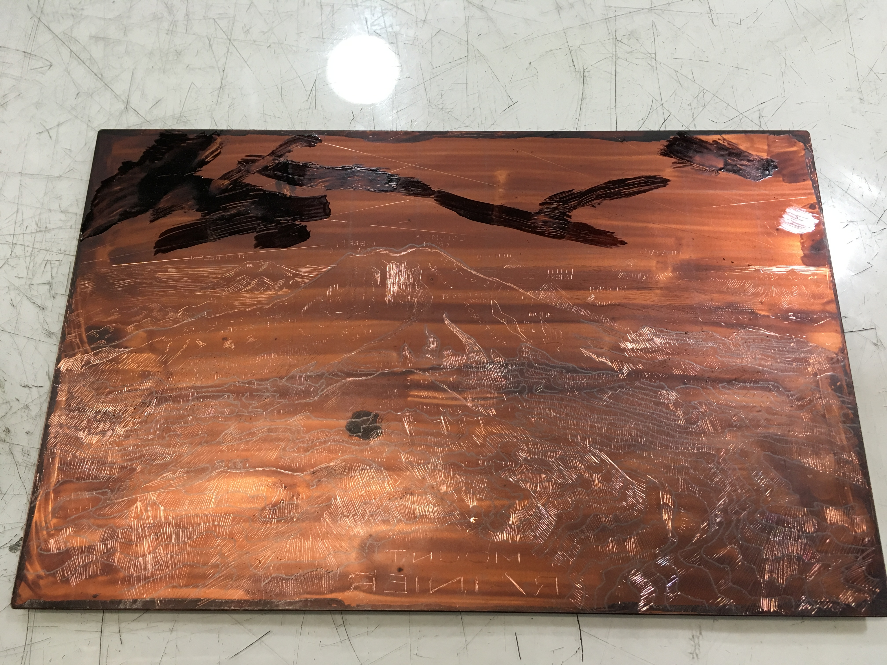Second round of etching, using stop-out to create a range of etch depths from shallow, faint lines in the background to deeper, richer lines in the foreground.
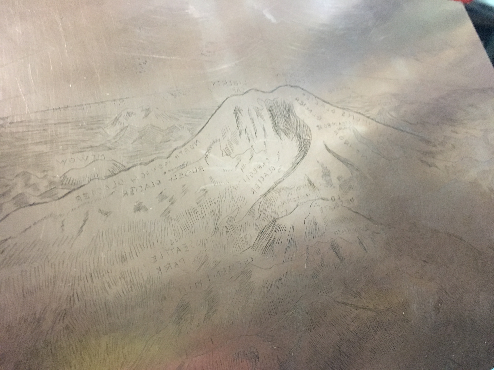Fully etched copper plate ready for running an edition.
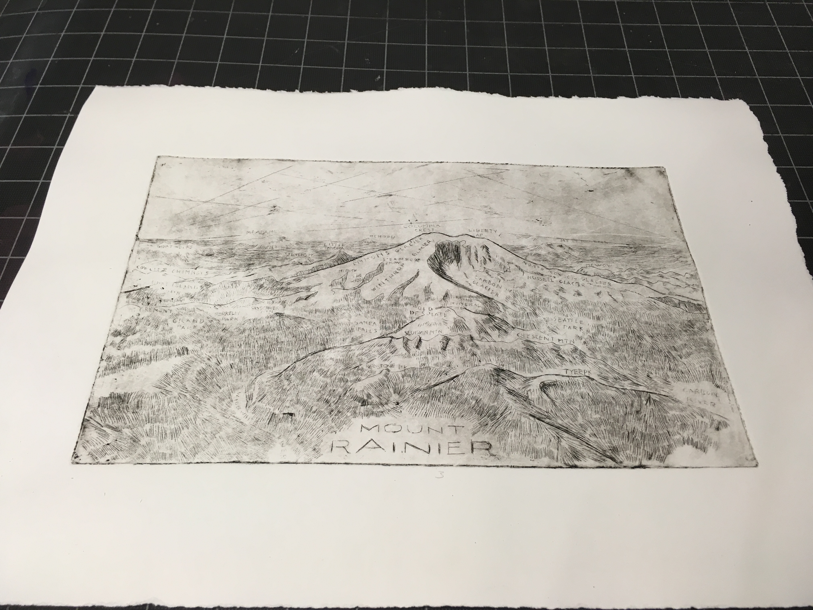Third working proof exhibits improving ink consistency.
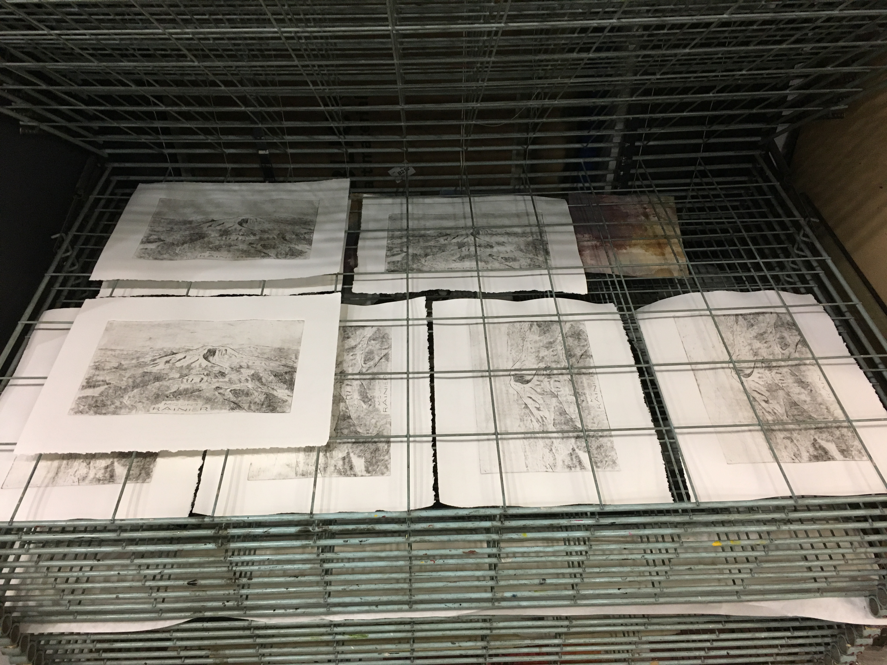Small edition of eight prints completed and drying on the rack.
The Western Shore of Lake Michigan and Environs
2015. Pencil and ink on paper. 60" by 15".
This is my third major hand-drawn map. While clearly related to my earlier hand-drawn maps of California (2012) and the Columbia River Watershed (2014), this map makes a few notable departures.
In beginning to compile this map, it quickly became clear to me that the landscape would require a different sort of symbolization. Where terrain relief depiction had played such a central role in the earlier maps, this relatively flat part of the world would seem incomplete without the integration of additional information. An airline passenger might note from her window seat the great grid of the Chicago conurbation, and just outside it, the seemingly endless agricultural grid spread across the fertile plain. I opted to tell a story of this pattern of land use and land cover within the bounds of pencil and black ink on paper (new theme, same instruments). I acquired the National Land Cover Dataset from The National Atlas and once again consulted Erwin Raisz's General Cartography (1948) for ideas on how to proceed. The trees and croplands especially reflect this influence.
Highways make a return to this map after being excluded from the Columbia River Watershed map. Where they meet the edge of the map, I provide indicators of the major cities beyond the horizon and their distances from that point. A notable characteristic of the Chicago region, of course, is its centrality and interconnectedness with much of the nation.
As with all my hand-drawn maps, this map's perspective/projection is framed to reflect how I experienced the place, as a resident of Chicago who made a few trips into Wisconsin. This experience led me to think of eastern Wisconsin and northeastern Illinois as a part of a cohesive region, with the formidible Lake Michigan as a unifying element, always looming to the east with its moods and its power. Perhaps not surprisingly, the importance of the lake in the composition led me to create a rich texture for open water for the first time. (I merely alluded to a wave-like texture for the Pacific Ocean along the shoreline in my Columbia River Watershed map, and it is completely absent from the California map, since I was at a loss for how to approach the Pacific at that time.)
Unfortunately I never got around the lake to Michigan during my brief stay in Chicago, so in this map, “The Mitten” remains a mystery beyond the horizon. A seemingly ever-present wall of clouds along the indeterminate horizon punctuates the lake's mood—another flourish I permitted myself to employ as long as I kept it subtle.
This map was unveiled in the Tangible Maps Exhibit / Map Gallery at the 2015 NACIS meeting, at The Depot in Minneapolis, Minnesota. For more on the exhibit, see this. Below is the cover of Cartographic Perspectives no. 82, which features an excerpt of the map.
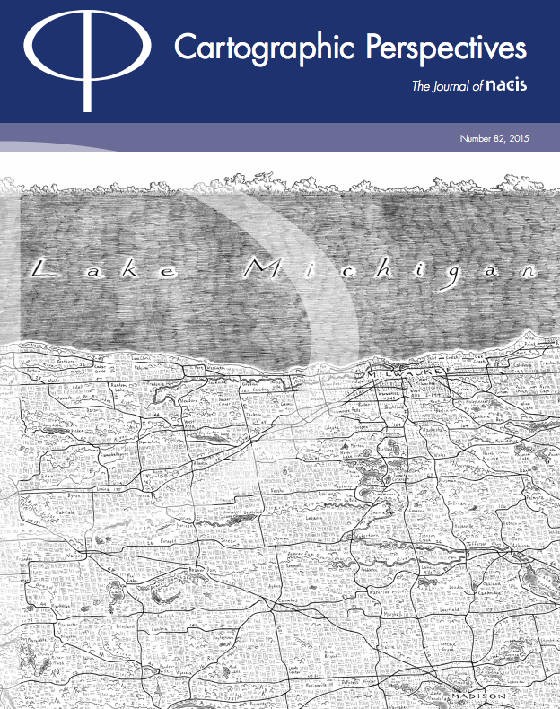
Columbia River Watershed
2014. Pencil and ink on paper. 32" wide by 17" tall.
This is my second work developed with the themes and techniques I explored with my map of California. Erwin Raisz proved a significant influence as I developed the California map, and his masterful "Landforms of the Northwestern States" sparked ideas for visually highlighting the Columbia and its tributaries, an over-arching priority in this new composition. Equally significant, I was deeply influenced by the work of Richard Edes Harrison, especially his work in Look at the World: the Fortune Atlas for World Strategy.
This map is an official selection for Volume 2 of the Atlas of Design, which is now available for purchase! As the Atlas draws together some of the finest cartographic design from around the world, this selection is truly a tremendous honor. Read what the editors had to say about the map in their Look Inside: Jake Coolidge's Columbia River Watershed. Kenneth Field also provides some interesting commentary on the International Cartographic Association's Commission on Map Design's page, have a look here.
In 2016, Teresa Marshall took a copy of this map on the road for her "Columbia River Watershed Storytelling Tour"; read more about it here.
California
2012. Pencil and ink on paper. 55" wide by 13.5" tall.
I completed this map in October 2012, just in time to exhibit it in the Map Gallery at the NACIS (North American Cartographic Information Society) Annual Meeting in Portland, Oregon. I spent a portion of most of my weekends from December 2011 to October 2012 working in earnest on the project, though I had developed sketches and conceptual frameworks for well over a year prior to actually drawing.
I gave a talk about this work at the 2013 AAG (Association of American Geographers) conference in Los Angeles, as part of a session organized with Nicolas Bauch and Rick Miller titled, "We Once Made Places With Images." My thanks to Nick and Rick for putting together such an interesting session, and to all the attendees who came up to the 30th floor of the Bonaventure Hotel to participate. Below is the abstract as it appeared in the AAG conference catalog:
Drawing a map by hand with pencil and pen on paper brings into sharp relief the many decisions at the core of the cartographer's craft—generalization and abstraction, label placement, the symbolization of features, among others—in an era where geographic information systems can automate many of these tasks and obscure the process from the map designer. I use hand-drawn map-making to reconnect with these processes in a tangible way, while making a tenuous connection to maps made in the mid-20th century, both venerable (the landform maps by Erwin Raisz, the perspective maps by Richard Edes Harrison) and whimsical (maps of Middle Earth by J.R.R. and Christopher Tolkien, promotional/tourism/souvenir maps). An imaginary perspective view from above facilitates a personal expression of the idea of "California" as both a geographic whole and a conglomeration of numerous regions, localities, and geomorphologic features. What is gained in this process and what is lost, how can the exposition of pre-digital techniques enhance our modern cartographic training and techniques, and how can reclaiming these practices augment our imagining and expression of place?
Unauthorized prints of this map recently appeared on Amazon. If you see a print of this map for sale on Amazon, please do not buy it. I have not granted any company permission to sell reprints of my work. Thankfully Amazon pulled the offending entry down fairly promptly when I reported it.
Graceland Cemetery Guide and Map
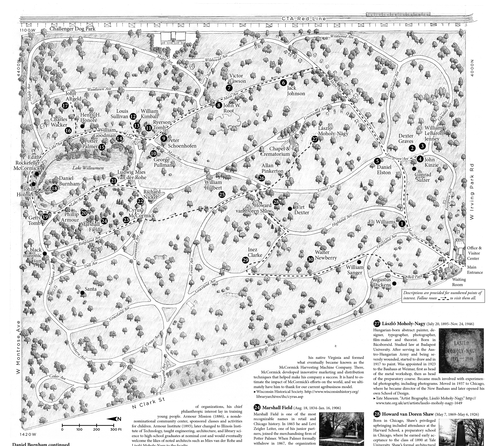
2014. 11" wide by 17" tall unfolded; 5.5" wide by 5.67" tall folded. Comprised of Illustrator artwork and hand-penciled background, scanned and adjusted in Photoshop; layout composed in InDesign. Based on OpenStreetMap data compiled in QGIS.
Developed in close collaboration with Joe Collier, a Chicago-based librarian and photographer who hosts in-depth walking tours of Graceland Cemetery, "the cemetery of architects". This map represents my first attempt at bringing my digital and hand-drawn cartographic techniques into one piece. HD Design and Printing lithographed the initial edition of 1,000 copies available for purchase at Joe Collier's Etsy shop. A subsequent 2-color edition has been published by the Graceland Cemetery trust (7,500 copies are now in circulation) and is available at Graceland Cemetery's visitor center.
The images below simulate the page sequence of the initial edition as the folded map is opened.
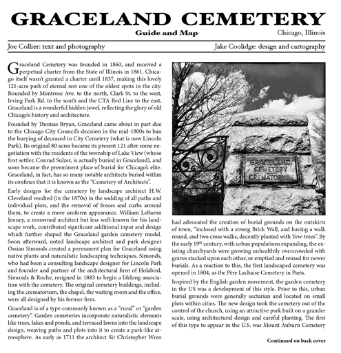 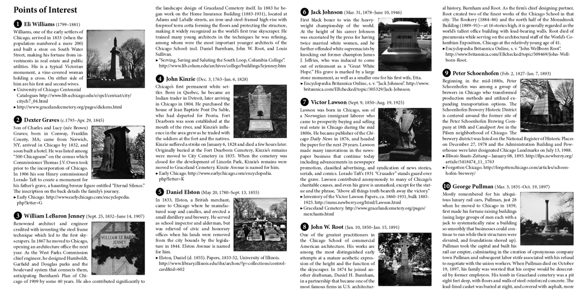 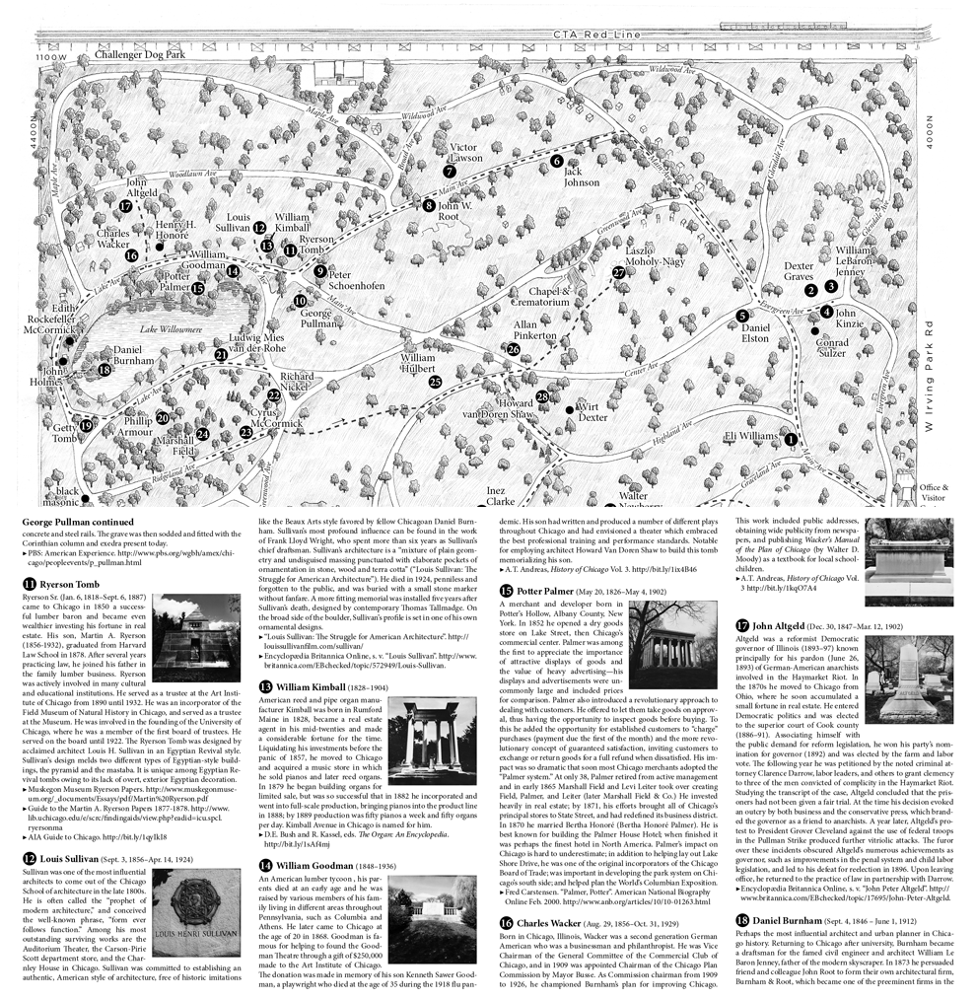 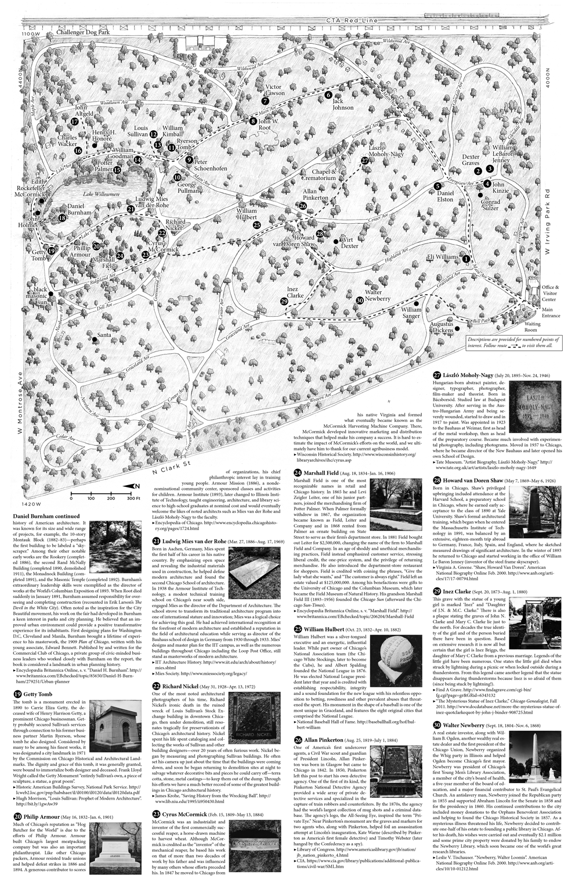 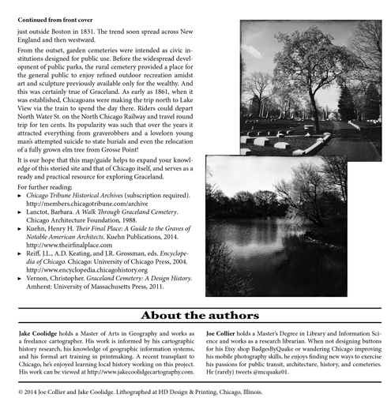
Sun Spots by Dave Sokolowski
2017. Pencil on paper.
These are pieces from my second collaboration with Dave Sokolowski—a series of maps for his Call of Cthulhu scenario Sun Spots. Whereas our first collaboration centered on a Cthulhu Dark scenario set in modern times with modern, digitally-produced maps and diagrams, Sun Spots is set in mid-1920s Massachusetts, and Dave needed maps that appeared to be artifacts from another time. So not only did I have an opportunity to broaden my hand-drawn map symbolization techniques, I was able to use Illustrator to create a topographic map with a more historic look and feel. All three maps depict a fictitious place in a manner consistent with each other as well as a drawing of the town, as seen from the lake, drawn by another artist. It's fun to create a new place while attempting to maintain some level of believability and consistently with the imaginations of your collaborators.
The map above is imagined as a tourist's map printed on placemats and distributed at the local Bell & Whistle Café. Below is the topographic map, attributed to the fictitious "Paramount Mining Corporation," and a simple, hand-drawn street map. All three are intended to help players as they orient themselves in the unfolding game scenario.
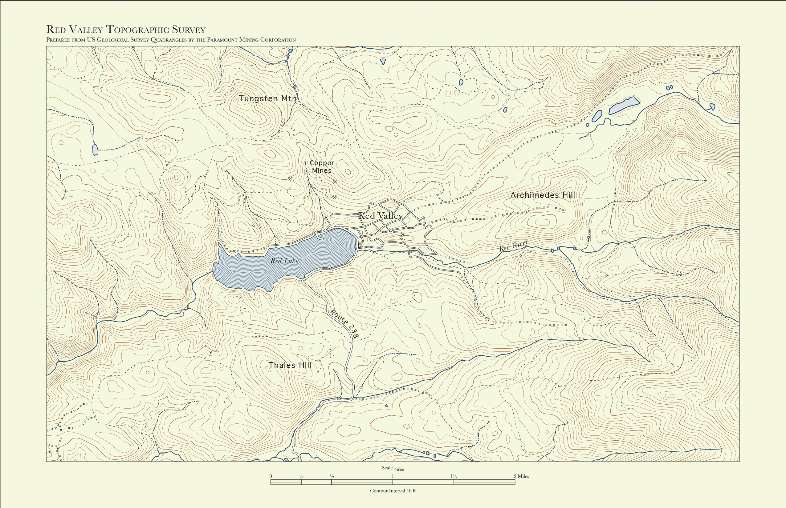
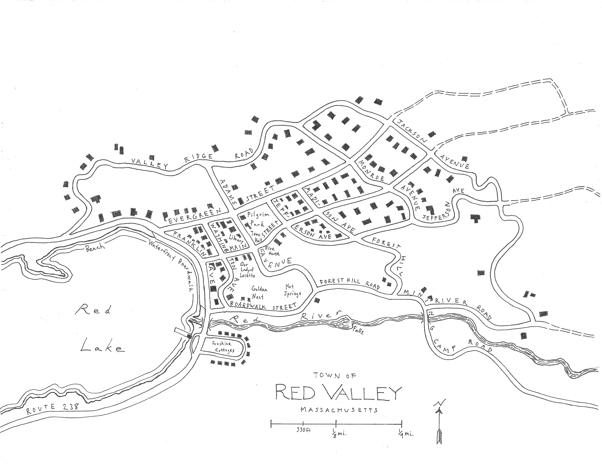